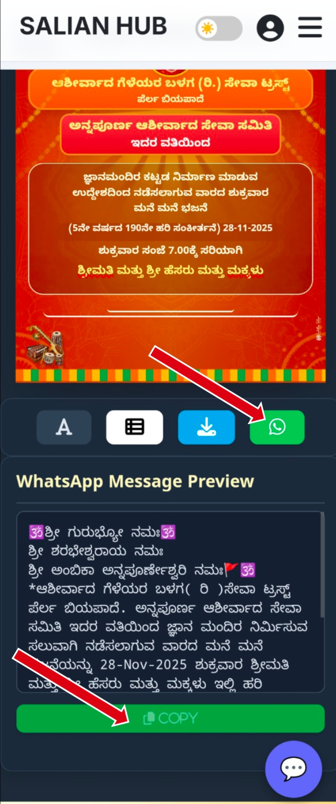

New Features Added

ಆತ್ಮೀಯ ಸದಸ್ಯರೇ, ವೆಬ್ಸೈಟ್ ಮೂಲಕ ಪೋಸ್ಟರ್ ಕಳುಹಿಸಲು ಈಗ ಹೊಸ Options ಇವೆ:
ಇದರ ಮೇಲೆ Click ಮಾಡಿದರೆ WhatsApp Open ಆಗುತ್ತದೆ. Poster Image ತಾನಾಗಿಯೇ Copy ಆಗಿರುತ್ತದೆ. Paste ಮಾಡಿ Send ಮಾಡಿ.
ನೀವು ಭಜನೆಯ ನಂತರ ಈ Message ಅನ್ನು Copy ಮಾಡಿ Send ಮಾಡಬಹುದು.